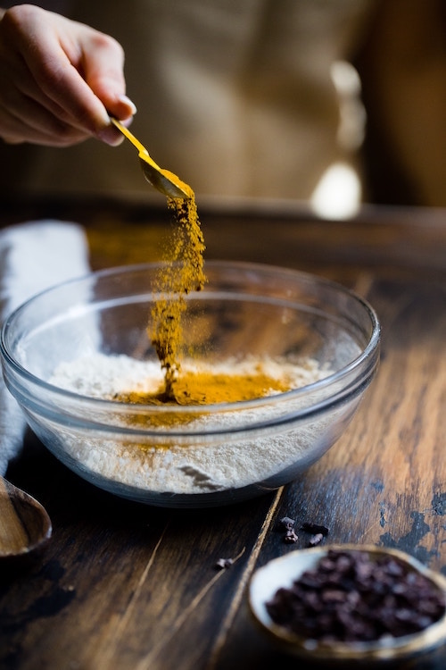

All About Me
Skills
I feel that I’m good at typing, coding, math, and crochet. I don’t particularly excel at it but, I know it pretty well and I can learn it.

Glenn Carstens-Peters Click Here
I feel that I’m good at typing, coding, math, and crochet. I don’t particularly excel at it but, I know it pretty well and I can learn it.
I adore reading manga in my free time and crocheting.

I’m interested in cooking. I am interested in this because I need to learn how to cook in the future. Another reason is that cooking food sounds fun.
I have a dad and older brother. My dad is currently not working. His old job was a casino worker. My older brother is a junior in high school. I used to live with my grandma but she left because me and my brother couldn’t take care of her anymore. She is now living with her sisters. My dad came from cambodia. His parents was born in china. My deceased mom is cambodian and her parents are cambodian.